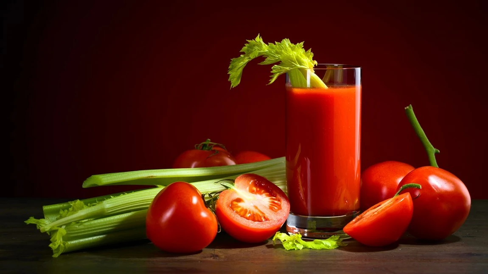

BloodyMary

description:
Fabulous choice, a fancy drink with a really good texture taste like a mix of spicy, salty, and savory flavours, with forward notes of tomatoes and hot sauce
ingredients:
- Vodka
- Tamato Juice
- Hot Sauces
- Celery
- Black Pepper
- Lemon Juice
how to make it:
- First Add dashes of Worcestershire Sauce, Tabasco, salt and pepper into highball glass
- Then pour all ingredients into highball with ice cubes
- Finally tir gently. Garnish with celery stalk and lemon wedge (optional).
go back to Quindecim